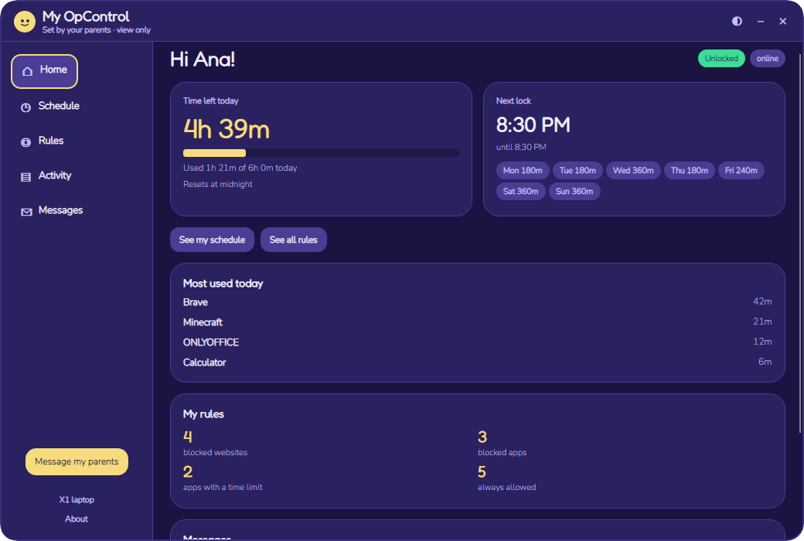
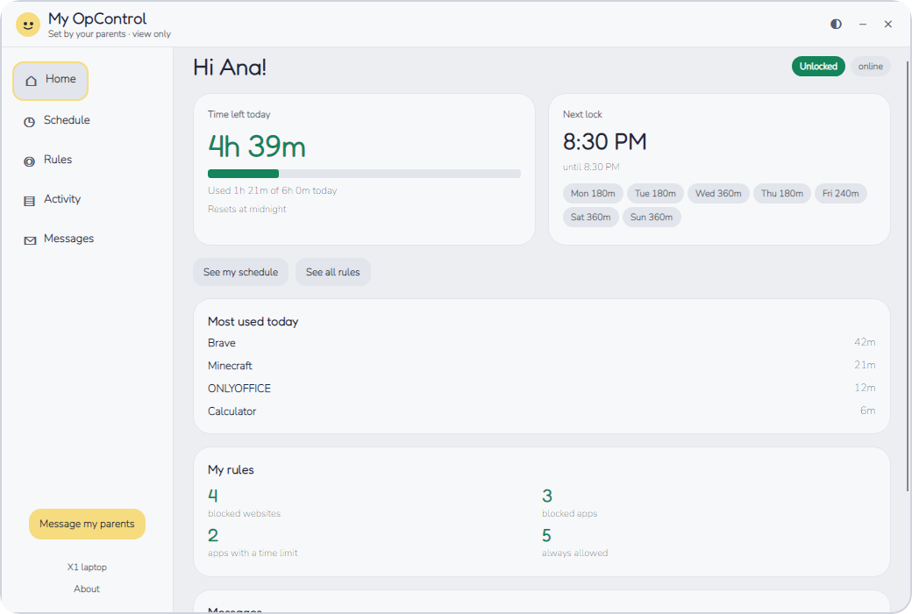
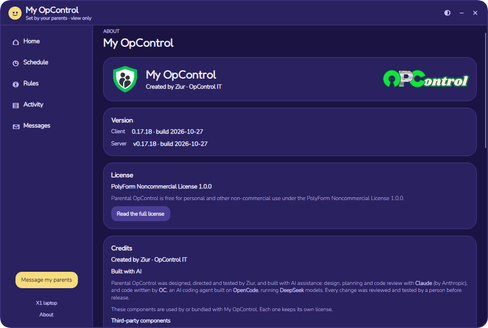
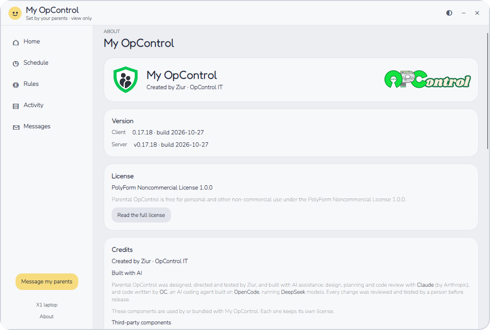
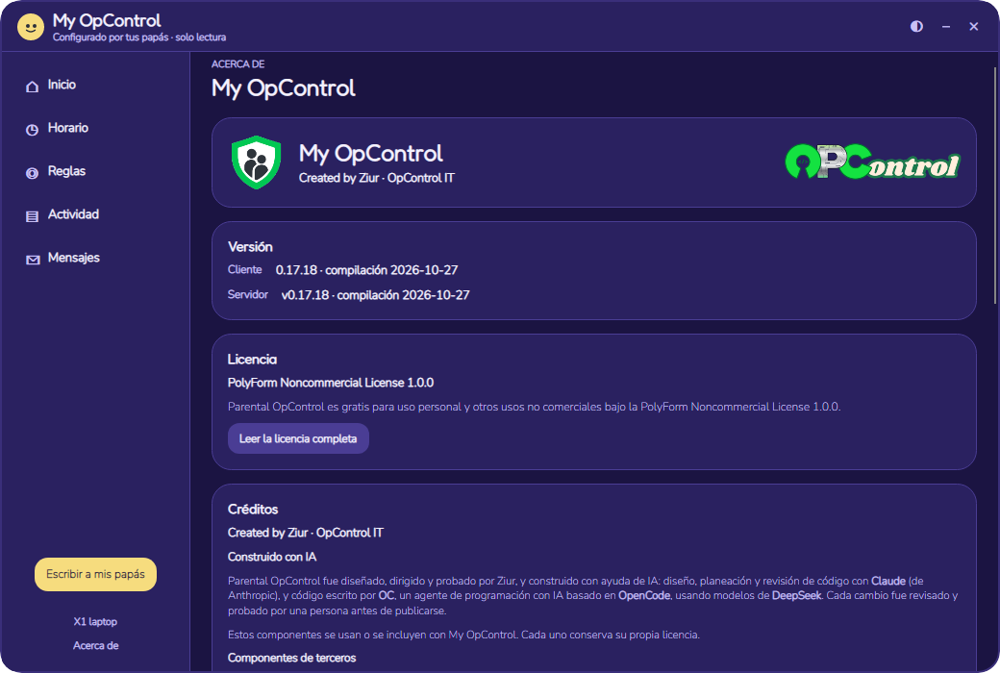
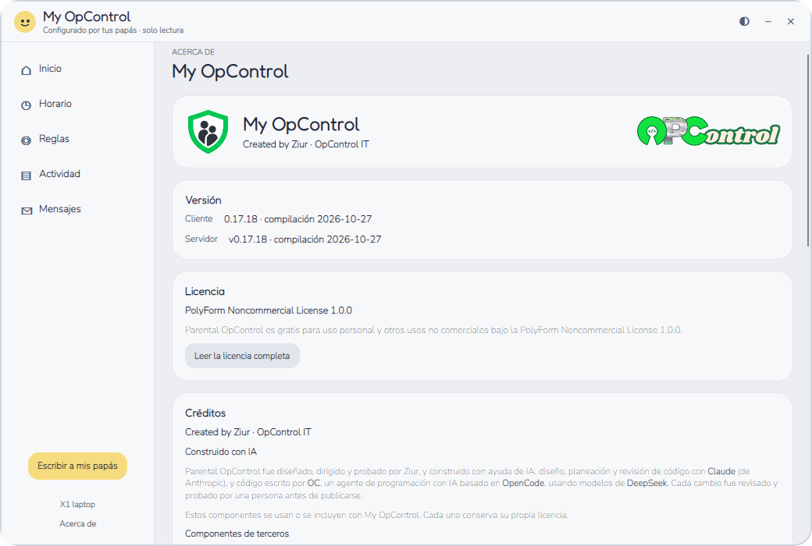

Job 20c — sidebar and About (v0.17.18)
XPS Debug preview, 1040×700, demo child Ana on X1 laptop.

Sidebar · night

Sidebar · Moon gray

About · night · English

About · Moon gray · English

About · night · es-MX

About · Moon gray · es-MX